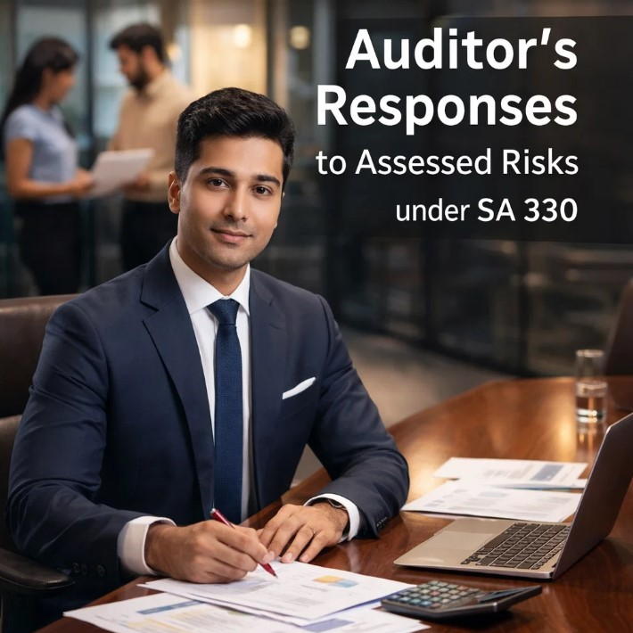

Auditor’s Responses to Assessed Risks under SA 330
In every audit engagement, identifying risks is one of the most critical steps. However, risk identification alone is not enough. Once an auditor assesses the risks of material misstatement, the next responsibility is to design and perform appropriate procedures to address those risks. This is the core objective of SA 330 – Auditor’s Responses to Assessed Risks.
Can your audit plan effectively handle assessed risks under SA 330?
SA 330 helps auditors act smarter, faster, and stronger. A great auditor does not fear risks—he responds to them strategically.
SA 330 provides a framework that guides auditors in responding effectively to the risks identified during the audit planning stage. It ensures that the auditor’s procedures are tailored to the level of risk involved, helping obtain sufficient and appropriate audit evidence to support the audit opinion.
Meaning of SA 330
SA 330 deals with the auditor’s responsibility to design and implement responses to the risks of material misstatement identified under SA 315. It focuses on transforming risk assessment into practical audit action.
In simple words, once the auditor identifies risky areas such as fraud risk, weak controls, complex transactions, or estimation uncertainty, SA 330 explains how the auditor should respond to those risks.
Objective of SA 330
The main objective of SA 330 is to enable the auditor to obtain sufficient and appropriate audit evidence regarding assessed risks by designing suitable audit procedures.
This means the auditor should not perform the same audit procedures for every area. Instead, procedures must vary depending on the nature and severity of risk.

Auditor’s Responses under SA 330
SA 330 divides responses into two broad categories:
1. Overall Responses to Risks at Financial Statement Level
These responses are broad measures when risks affect the financial statements as a whole.
- Assigning experienced audit team members
- Increasing supervision of junior staff
- Applying higher professional skepticism
- Including unpredictability in audit testing
- Modifying the audit strategy
- Performing procedures closer to year-end
These responses are useful when risks arise from poor governance, weak internal controls, management bias, or financial pressure.
2. Further Audit Procedures at Assertion Level
These are specific procedures for transactions, balances, and disclosures.
A. Tests of Controls
Performed when:
- Auditor intends to rely on internal controls
- Substantive procedures alone are insufficient
Examples:
- Checking approval controls
- Reviewing authorization processes
- Testing system access controls
- Examining segregation of duties
If controls are effective, the auditor may reduce substantive testing.
B. Substantive Procedures
These procedures directly detect material misstatements.
- Verification of invoices
- External confirmations
- Inventory counting
- Recalculation of depreciation
- Bank reconciliation checking
- Analytical review procedures
Substantive procedures are mandatory for material classes of transactions and balances.
Nature, Timing and Extent of Audit Procedures
SA 330 requires the auditor to decide audit procedures based on:
Nature
Type of procedure performed.
- Inspection
- Observation
- Inquiry
- Recalculation
- Confirmation
Higher risks often require more reliable procedures like confirmations and physical verification.
Timing
When procedures are performed.
- Interim audit procedures
- Year-end procedures
- Surprise checks
Higher-risk areas are often tested closer to year-end.
Extent
Quantity of audit testing.
- More sample size
- Detailed testing
- Multiple locations covered
Higher risk generally means greater extent of testing.
Responses to Significant Risks
Significant risks require special audit attention.
Examples of significant risks:
- Fraud in revenue recognition
- Related party transactions
- Complex accounting estimates
- Unusual journal entries
- Business combinations
For significant risks:
- Substantive procedures must be performed
- Controls relied upon must be tested in current year
- More persuasive evidence is required
Use of Audit Evidence
After performing procedures, the auditor evaluates whether sufficient and appropriate evidence has been obtained.
- Additional procedures are required if evidence is weak
- Risk assessment may need revision
- Further investigation may be necessary
If Misstatements Are Found
When audit procedures detect misstatements, the auditor should:
- Investigate the cause
- Assess whether it indicates fraud
- Consider impact on other areas
- Revise risk assessment if necessary
- Request management correction
Documentation under SA 330
The auditor must document:
- Assessed risks
- Overall responses designed
- Specific procedures performed
- Results of testing
- Conclusions reached
- Changes in audit plan, if any
Practical Example of SA 330
Risk Assessed: Revenue may be overstated.
Response under SA 330:
- Test sales invoices near year-end
- Verify dispatch documents
- Obtain customer confirmations
- Review credit notes after year-end
- Examine unusual journal entries in revenue
Importance of SA 330
- Connects risk assessment with audit execution
- Focuses audit effort on risky areas
- Improves efficiency of audit procedures
- Enhances audit quality
- Reduces chances of missing material misstatements
- Supports reliable audit opinion
Relationship with Other Standards
- SA 315 – Identifying and Assessing Risks
- SA 500 – Audit Evidence
- SA 520 – Analytical Procedures
- SA 530 – Audit Sampling
- SA 240 – Fraud Responsibilities
Common Mistakes by Auditors
- Using same procedures for all clients
- Ignoring significant risks
- Over-relying on inquiry evidence
- Inadequate documentation
- Not revising procedures after new findings
- Weak professional skepticism
Conclusion
Auditor’s Responses to Assessed Risks under SA 330 is a fundamental auditing concept that ensures auditors respond intelligently after identifying risks. It requires tailored procedures based on the seriousness and nature of risks, rather than using standard checklists for every audit.
By applying SA 330 properly, auditors gather stronger evidence, improve audit quality, and issue more reliable opinions. In today’s complex business environment, this Standard remains essential for effective and risk-focused auditing.